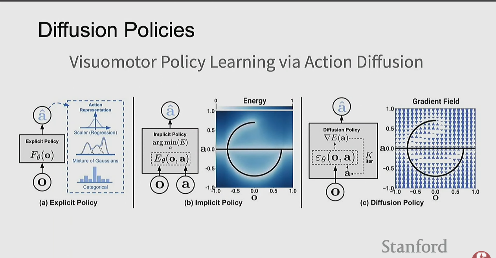

How machines acquire skills through experience, demonstrations, or interaction with the environment. Robot learning bridges computer vision, reinforcement learning, and imitation learning to build robots that can perceive, plan, and act in the physical world.
Goal: learn a policy π(s) → a that maps observations/states to actions to maximize cumulative reward.
| Concept | Meaning | Examples |
|---|---|---|
| State s_t | What the robot perceives | Camera images, joint positions, tactile sensors |
| Action a_t | Motor commands | Joint torques, velocities, gripper open/close |
| Reward r_t | Scalar feedback signal | Task success, distance to goal, energy penalty |
| Goal g | Task specification | Text instruction, goal image, target state |

RL learns by trial and error — the robot interacts with the environment and adjusts behavior to maximize cumulative reward.
| Task | Approach | Paper |
|---|---|---|
| Atari games | DQN (Deep Q-Network) | Playing Atari with Deep RL |
| Go | AlphaGo | Mastering Go with deep neural networks |
| Chess/Shogi | AlphaZero | Mastering Chess and Shogi by Self-Play |
| StarCraft II | AlphaStar | Grandmaster level in StarCraft II |
| Quadruped locomotion | Model-free RL | Learning Quadrupedal Locomotion over Challenging Terrain |
| Rubik's Cube | Dexterous RL | Solving Rubik's Cube with a Robot Hand |
Key observation: locomotion (walking, running, jumping) is nearly a solved problem using RL.
Instead of learning behavior directly from reward, learn a world model that predicts future states given actions:
(state s_t, action a_t) → predicted next state s_t+1
Three model types: pixel dynamics (predict next video frame), keypoint dynamics (track important points on objects), particle dynamics (represent deformable objects as particle collections).
Learn from human demonstrations rather than reward signals. Three main approaches with different trade-offs:
Treat demonstrations as supervised learning: (observation, expert_action) pairs → train policy with supervised loss.
Learn an energy function E(o, a) scoring action-observation pairs. At inference: pick the action with lowest energy. Handles multimodal distributions.
Apply diffusion model technology to robot action generation. Start with noisy random actions, iteratively denoise toward optimal trajectory.
Rather than copying behavior directly, infer the reward function the expert was optimizing. Observe demonstrations, infer what reward best explains the behavior, then train a policy to maximize that inferred reward.
| Imitation Learning | IRL | |
|---|---|---|
| Learns | Policy (state → action) | Reward function |
| Uses demos to | Directly copy behavior | Understand intent |
| Generalization | Limited | Often better |
Foundation models for robotics — analogous to ChatGPT for text, but for physical action. Input: camera images + goal specification. Output: robot joint commands / end-effector trajectories. Trained on large-scale robot interaction datasets across many robots and tasks.
| Model | Key Innovation |
|---|---|
| RT-1 | Robotics Transformer for real-world control at scale |
| RT-2 | Vision-Language-Action: web knowledge → robot control |
| RT-X | Cross-embodiment training across many robot types |
| OpenVLA | Open-source VLA model |
| π₀ (Pi Zero) | Flow-based VLA from Physical Intelligence |
| GR00T N1 | NVIDIA open foundation model for humanoid robots |
| Gemini Robotics | Bringing Gemini AI into the physical world |
Robots perceive the world through multiple sensors: cameras (RGB, depth/RGB-D), LiDAR (point clouds for 3D mapping), tactile sensors (force and contact), and proprioception (joint angles, velocities).
Robot vision is fundamentally different from image classification:
The next frontier: teach robots "how the world works" so they can simulate actions mentally before executing them physically.
(current state s_t, action a_t) → predicted next state s_t+1
The three pillars of physical intelligence: action-conditioned interaction data, a foundation policy (the doer), and a foundation world model (the predictor).
The dominant assumption in frontier robotics research is that enough data, tasks, and scale will produce generality. A Stanford and Google DeepMind study running 1,600+ real-world robot trials across 14 axes of generalization found that state-of-the-art generalist policies still struggle with small perturbations — a changed camera angle, a rephrased instruction, or a shift in object properties.
| Research criteria | Commercial criteria |
|---|---|
| Can the system handle more scenarios? | Does it work consistently? |
| Can it adapt across environments? | What is the throughput and uptime? |
| Can it learn broad capabilities from diverse data? | Does it integrate into an existing workflow? |
| Generalization benchmark scores | Does it save money? |
GOFE is the countervailing principle to end-to-end learning: use whatever tools are available to make the system work reliably. If you know the height of a table, add a rule so the gripper never dips below that threshold. If there is a mathematical function that reliably solves a subproblem, use it.
"GOFE is viewed as a crutch, something you're encouraged to stay away from at all costs. But GOFE can be extremely helpful to get robots to work reliably in real environments so they can collect data." — Ken Goldberg, UC Berkeley
The path to generality runs through specialist systems, not around them.
The gap between what robotics research demonstrates and what operates at scale in production has never been wider. VLA models follow natural language instructions to manipulate unseen objects, yet the vast majority of production robots remain narrowly preprogrammed.
| Challenge | Infrastructure Needed |
|---|---|
| Distribution Shift — deployment environments are out-of-distribution by definition; 95% lab accuracy can drop to 60% in the field | Scalable teleoperation, deployment-time data collection, domain-specific datasets |
| Reliability Thresholds — production requires 99.9%+; a 95% success rate means 50 failures per day on a busy picking robot | Failure mode characterization, graceful degradation, hybrid learned+programmed architectures |
| Latency-Capability Tradeoffs — manipulation needs 20–100Hz; large VLAs may achieve only 10–20Hz on edge hardware | Efficient architectures, hierarchical systems (slow semantic + fast motor), hardware-software co-design |
| Integration Complexities — robots must interface with WMS, coordinate with other machines, log events for compliance | Robotics middleware with adapters for WMS/MES/ERP, deployment automation |
| Safety Certification — ISO 10218 and ISO/TS 15066 were written for programmed robots; formally verifying a 7B parameter model is infeasible | Behavioral characterization, runtime safety override layers, updated standards |
| Maintenance — a failed learned policy can't be debugged by reading code; there is no code, just weights | Observability tooling, expertise development, systematic failure diagnostics |
The robotics data flywheel: once robots can collect data while creating economic value, the cost of robot data decreases, subsidized by the value the robot generates. Bootstrapping this flywheel requires crossing an initial deployment threshold.